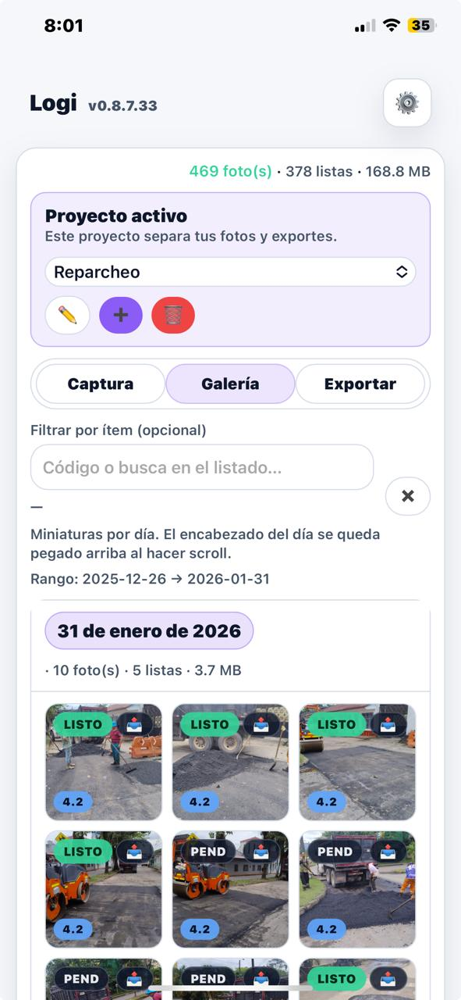
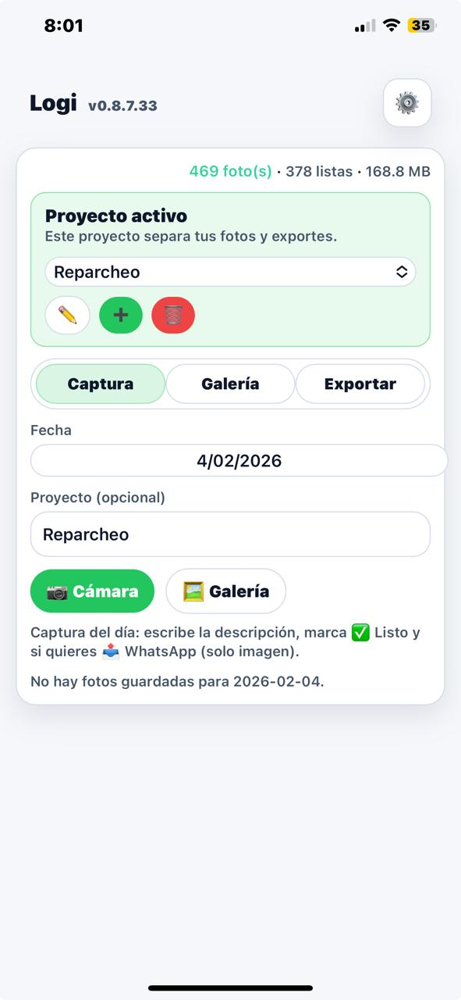
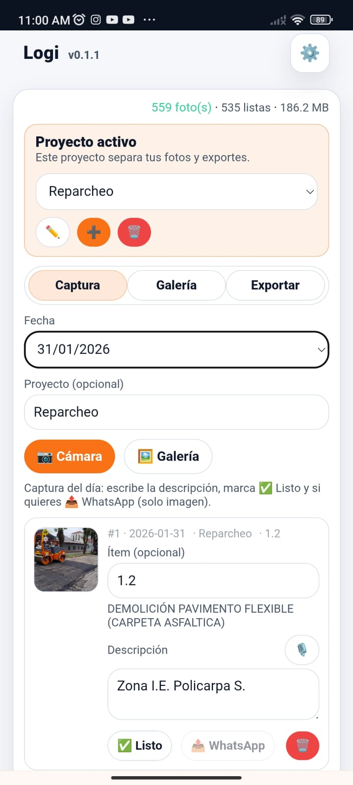
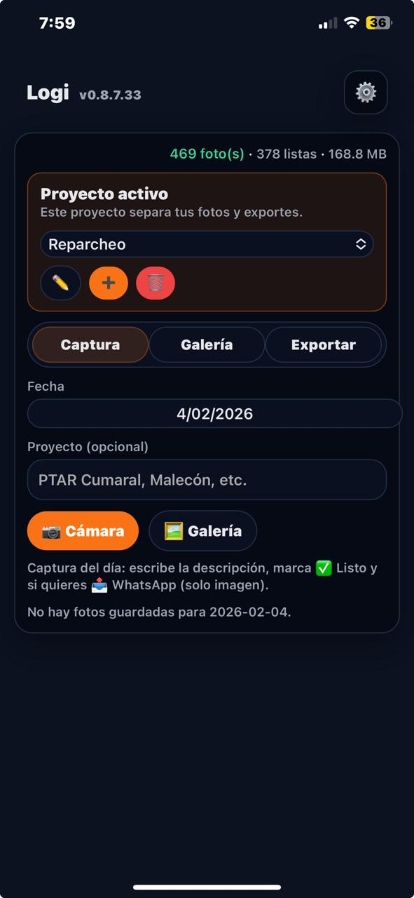
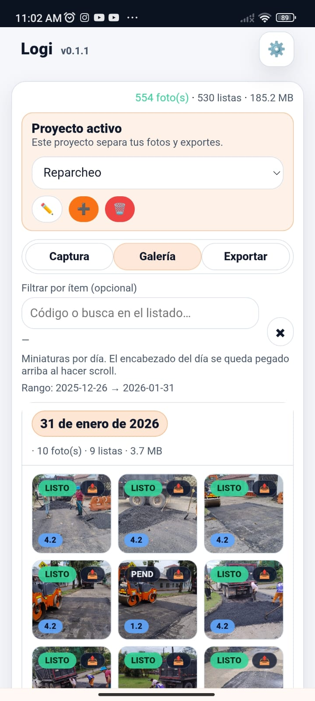
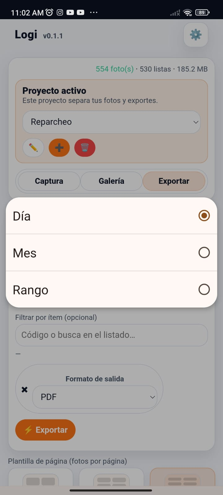
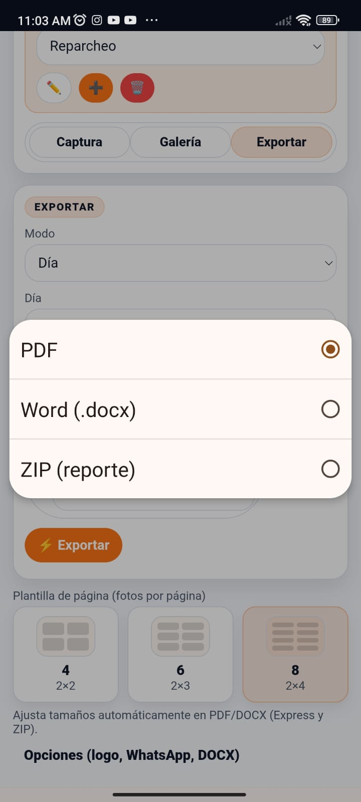

Reportes fotográficos
listos en segundos.
La herramienta técnica para ingenieros que elimina el trabajo manual de oficina. Documentación fotográfica vinculada y organizada desde el frente de obra.
Flujo de Trabajo Logi

Proyectos
Organiza tus contratos o frentes de obra de forma independiente para un control total.

Gestión
Administra galerías de fotos independientes por cada contrato activo.

Registro en Campo
Captura fotos directamente o súbelas desde tu galería en el frente de obra.

Clasificación
Vincula cada foto al ítem correspondiente y añade descripciones técnicas al instante.

Galería Inteligente
Filtra y busca fotos rápidamente por ítems específicos del proyecto.

Periodo de Reporte
Selecciona el rango de fechas exacto que necesitas documentar en tu informe.

Exportación Versátil
Genera reportes técnicos en PDF o Word, listos para enviar o ajustar.
Documentación Generada
Reportes fotográficos de alta precisión. La aplicación automatiza el volcado de datos para que tú solo te encargues de la revisión final.
-85%
Tiempo de Oficina
PDF / Word
Formatos de Salida
ZIP
Respaldo de Evidencia
Formato Estándar Logi
Estructura técnica optimizada con georreferenciación y firmas. Disponible para exportación inmediata en PDF o Word editable.
Ver ejemplo PDFTus Propias Plantillas
Sube el formato de tu proyecto. Logi rellena la información automáticamente y te entrega un archivo Word para tu control final.
Ver ejemplo Word